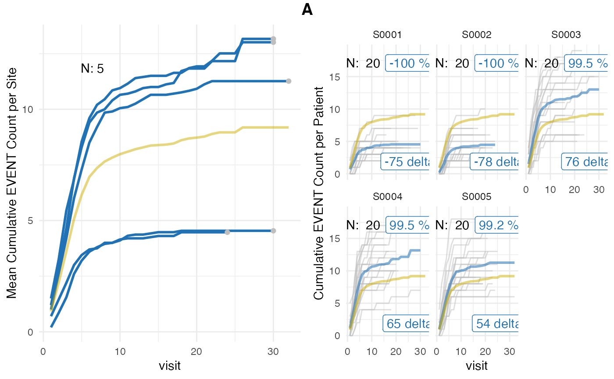
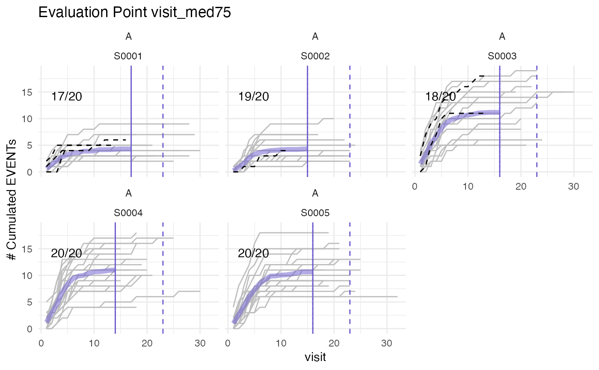

generic plot function for simaerep objects
Usage
# S3 method for class 'simaerep'
plot(
x,
...,
study = NULL,
what = c("prob", "med75"),
n_sites = 16,
df_visit = NULL,
env = parent.frame(),
plot_event = x$event_names[1]
)Arguments
- x
simaerep object
- ...
additional parameters passed to plot_study() or plot_visit_med75()
- study
character specifying study to be plotted, Default: NULL
- what
one of c("ur", "med75"), specifying whether to plot site AE under-reporting or visit_med75 values, Default: 'ur'
- n_sites
number of sites to plot, Default: 16
- df_visit
optional, pass original visit data if it cannot be retrieved from parent environment, Default: NULL
- env
optional, pass environment from which to retrieve original visit data, Default: parent.frame()
- plot_event
vector containing the events that should be plotted, default = "ae"
Details
see plot_study() and plot_visit_med75()
Examples
# \donttest{
df_visit <- sim_test_data_study(
n_pat = 100,
n_sites = 5,
ratio_out = 0.4,
factor_event_rate = - 0.6
)
evrep <- simaerep(df_visit)
plot(evrep, what = "prob", study = "A")

plot(evrep, what = "med75", study = "A")
#> purple line: mean site event of patients with visit_med75
#> grey line: patient included
#> black dashed line: patient excluded
#> dotted vertical line: visit_med75, 0.75 x median of maximum patient visits of site
#> solid vertical line: visit_med75 adjusted, increased to minimum maximum patient visit of included patients
#> dashed vertical line: maximum value for visit_med75 adjusted, 80% quantile of maximum patient visits of study
#>

# }